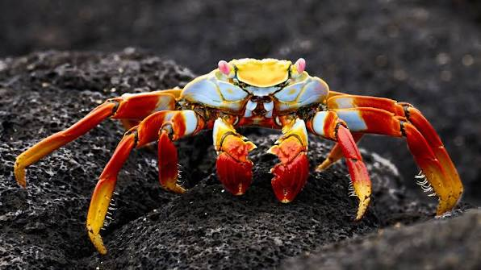
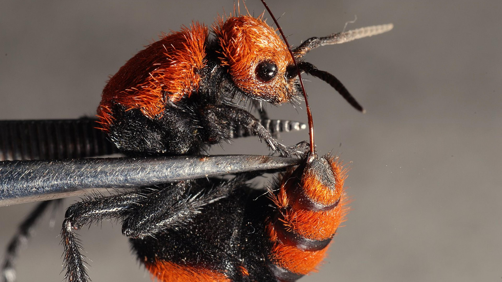
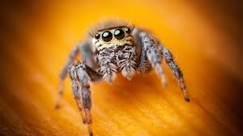

Exploring Invertebrates
Invertebrates are the most successful and diverse group of animals on our planet, making up about 97% of all animal species! Unlike vertebrates, these creatures do not have a backbone. Instead, many use external shells or fluid-filled bodies to keep their shape. They range from tiny insects and spiders to massive giant squids that live in the dark corners of the ocean.
Diverse Shapes and Sizes
Because they don't have a rigid internal skeleton, invertebrates have evolved some of the most unique body designs in nature. Groups like Arthropods (insects and crabs) have hard exoskeletons, while Mollusks (snails and octopuses) often have soft bodies. They are essential to our ecosystems, acting as pollinators, decomposers, and a vital food source for many other animals in the kingdom!

Crustaeceans

Insects
